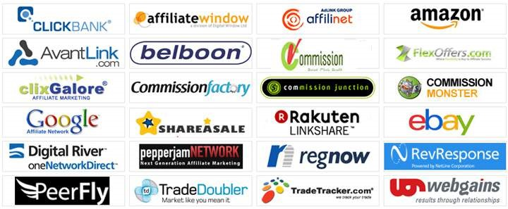
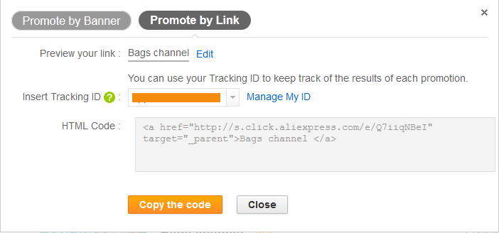
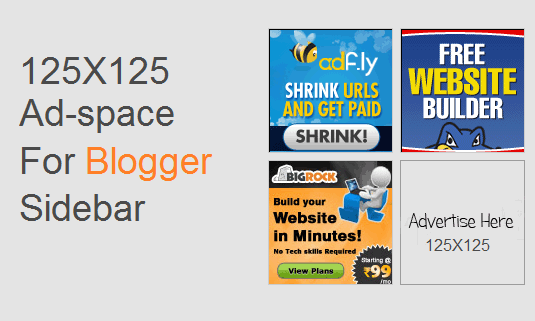

Affiliate Marketing Bussiness
Affiliate marketing gives you the opportunity to earn a commission by selling products or services offered by other companies. It's a great way to supplement your income from the convenience of your own home. Fortunately, it's also easy to become an affiliate for companies that are household names.
SECTION I: BECOMING AN AFFILIATE
1. Sell what you know
To start, you should stick to selling products or services that you're familiar with. Online marketers call this process "picking your niche." You should select a niche that represents your current interests or your occupation.
- For example, if you're an expert at interior decorating, it makes more sense to sell comforter sets than it does to sell automotive parts. You'll do a much better job with your individual marketing efforts if you stick to selling what you know.
2. Start a website relevant to your niche
Before becoming an affiliate, many companies will want to know the URL of the website that you'll use to sell their products. They do this because they want to ensure that the content on the website won't hurt the company's reputation.
- It's easy to start a website these days thanks to sites like WordPress.com.
- Be sure to add content to your website that isn't "salesy." You want your site to come across as an authority in your niche.

3. Start a website relevant to your niche
Find an affiliate program that offers products or services in your niche.
- Amazon sells just about everything, so it's likely that your niche includes products sold on Amazon. That's a good place to start if you're looking to get into affiliate marketing.
- Commission Junction is another great option because it allows you to become an affiliate for countless companies that you already know about (e.g., Overstock, Office Depot, Boscov's, and many others).
- Clickbank is yet another option that many affiliate marketers like. That's because the commissions from companies on that site can be very lucrative.

4. Join an affiliate program
It's almost always free of charge to join an affiliate program
- In fact, if you're being asked for a credit card number just to become an affiliate, you might be getting scammed. Most reputable companies that offer affiliate programs allow people to become affiliates free of charge.
- You will, however, be asked for bank account or PayPal information. Keep in mind, that's not so that the company can take money away from you, but so that it can pay you the commission you earned with successful sales.
- You will be asked for the URL of your website in some cases. Just provide the URL of the website that you created above..
SECTION II: MARKETING PRODUCTS ON YOUR WEBSITE

1. Add affiliate links in your content
One great way to get paid a commission without appearing to sell anything is add affiliate links within your content. That way, when people click on the link, they're taken to the company site and, if they buy, you'll earn a commission.
- For example, if you're writing about decor that includes purple comforters, make the phrase "purple comforters" a link to Amazon's site that shows people only comforters that are offered in purple. Your readers can browse through Amazon's offerings and maybe purchase an item that they like.
- Good news: Companies make it very easy to get links to their site. The way that you get those links varies from company to company, but it's usually very easy to find a link to the product or products that you're looking for.

2. Include visual ads in your sidebar
Your website, like most websites, probably has a sidebar. That's a great place to include visual ads for products relevant to your niche.
- Once again, you'll find that companies with affiliate programs make it very easy for you to obtain the images and links you need to get your visitors back to their sites. It's almost always just as easy as copying and pasting code into your sidebar.
3. Continue producing content relevant to your niche
You want to keep people coming back to your website, don't you? If so, then you need to keep on producing original content that's of value to your visitors. That's called "content marketing" by digital marketers.
- Good content keeps visitors coming back. That means that they might eventually click on your affiliate links and purchase something.
- You can also use your content to include affiliate links as mentioned above. The more content you produce, the more affiliate links you have. The law of averages eventually kicks in and you'll start selling.
4. Use analytics to measure your success
You can think of analytics as information about what you're selling, how you sold it, and to whom you sold it. [8] Fortunately, most affiliate marketing sites offer helpful analytics so you can get an idea about what's working well for you.
- If you find that one type of product sells well on your site, produce content that gives you the opportunity to market it even more.
- Use Google Analytics to gain an understanding of the demographics of your visitors. Tailor your content marketing efforts to people in that demographic.
- Pay attention to your posts that get the most visitors. If you find that some posts are getting significantly more hits than the others, consider adding additional affiliate links to them.
- Focus on what works, eliminate what doesn't. The analytics provided by your company will tell you which types of ads are working and which ones aren't. Use more of the ads that are working and eliminate the ones that aren't.
SECTION III: MANAGING YOUR BUSINESS
1. Prepare for taxes
If you make money via affiliate marketing, you can be sure that you're going to have to pay taxes on that income. At the beginning of each year, your partner companies should send you a 1099 tax form. If they don't, you're still required to report the income to the IRS.
- If you're running your affiliate marketing business as a sole proprietor or LLC, you'll report 1099 income on Schedule C - Profit or Loss from Business.
- If you're running your business as an S or C corporation, you'll report the income on Schedule K-1.
2. Expand your business
Your business is likely to do one of two things: expand or contract. That's why you should always be striving for growth, otherwise your business will shrink and provide you with diminishing returns.
- Look for new products that you think you can market online. Browse through various affiliate sites. Look for new businesses that have recently welcomed affiliates and, if they're offering something you think you can market well, partner up with them.
- Promote your business constantly online. Use social media, email, and other channels to promote your business so that people keep coming back and looking for great deals on the products and services that you're marketing.
3. Delegate routine tasks
Once your business takes off, it's time for you to focus on how to grow your business while delegating routine tasks to others. It will cost you some money in labor expense, but the investment is worth it if it allows you to come up with new ways to promote your affiliate marketing business and build it even further.
4. Automate what you can
There are plenty of digital marketing tools available. Again, some of them will require you to make an investment, but if it gives you more free time to build your business, then the return on investment should be positive.
- Focus on creating a long-term strategy for your business while your tools and employees handle routine, day-to-day tasks. That way, you can handle "big picture" responsibilities to ensure that your business continues to grow.
Source Internet